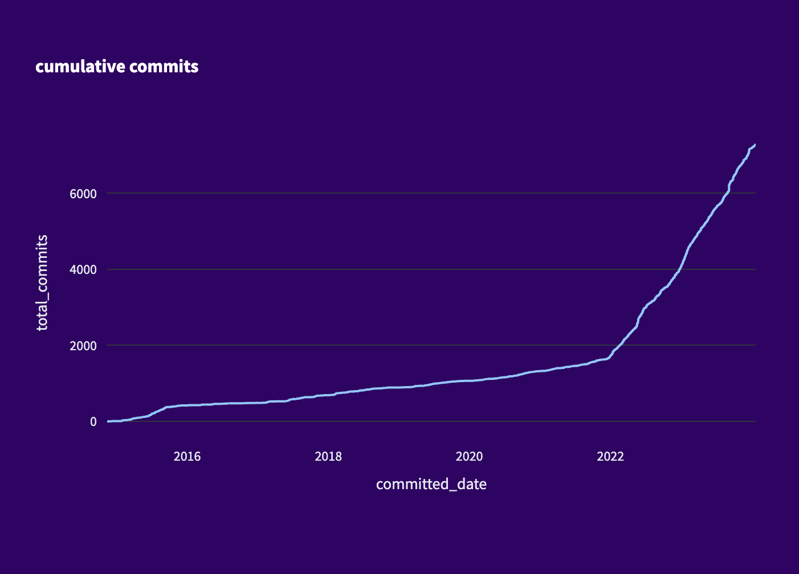
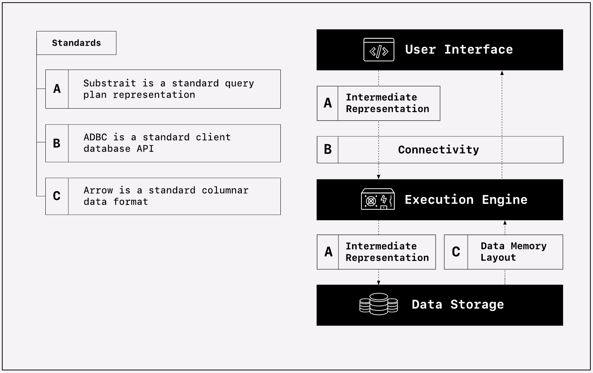

Overview
The Ibis project is an independently governed open source community project to build and maintain the portable Python dataframe library. Ibis has contributors across a range of data companies and institutions. Today the core Ibis maintainers are employed by Voltron Data. Voltron Data’s support of Ibis is a part of its strategy to enable modular and composable systems for data analytics.
Background
The Ibis project was started in 2015 by Wes McKinney, the creator of pandas and a cofounder of Voltron Data, as a pandas-like interface to Apache Impala. It received improvements and support over the years, but really took off under the stewardship of Phillip Cloud and the current Ibis team at Voltron Data. It now supports 20+ backends and is improving rapidly. It’s never been a better time to get involved with Ibis.
You can see the inflection point in the number of commits to the repository in early 2022:

Who are we?
Cody
My name is Cody and I’m employed by Voltron Data to work on Ibis full-time as a Technical Product Manager. I am an Ibis contributor and have created the Delta Lake table input/output methods, helped move the documentation over to Quarto, and created the Zulip chat for the community.
My job is to help the Ibis community grow and thrive. I have a background in ML (especially MLOps) and data products. Ibis solves many challenges I’ve seen in the data space and I’m excited to help increase its adoption as a standard Python frontend for dozens of data backends to reduce friction in the data ecosystem.
Ian
I’m Ian, Director of Product Management at Voltron Data. I’m an Apache Arrow contributor and I have a decade of experience working with SQL, dataframe APIs, open standards, and distributed systems.
My job is to align our open source engineering work at Voltron Data with the needs and priorities of our stakeholders, including all the projects and organizations that depend on Arrow and Ibis. I also launched Voltron Data’s enterprise support product to help make projects like Arrow and Ibis into safe, smart choices for companies to build into business-critical applications.
Why does Voltron Data (VoDa) support Ibis?
Why does Voltron Data employ a Technical Product Manager to work on Ibis full-time? Why does Voltron Data employ five software engineers to work on Ibis full-time? Great questions!
To understand Voltron Data – or if you’re generally interested in learning about the composable data ecosystem – check out the The Composable Codex by Voltron Data.
Voltron Data is a startup company founded in 2021 with the goal of making it possible for organizations to build modular, composable, high-performance systems for data analytics. Voltron Data advances open standards (like Apache Arrow and Substrait) and builds software components that embrace these standards for maximum interoperability and performance. This includes free and open source software like Ibis.

This also includes a commercially licensed product: Theseus, Voltron Data’s accelerator-native data processing engine. Theseus is a separate project built by a different team at Voltron Data. Most Ibis contributors do not need to know about Theseus. Most Ibis users will probably never use Theseus. But the two projects are related parts of Voltron Data’s strategy.
The strategy goes like this:
- Big changes are afoot in the world of computing hardware. Moore’s Law is coming to an end. Accelerated hardware such as NVIDIA GPUs are becoming more important for performance and efficiency—not just for AI and ML, but data analytics too.
- Big changes in hardware require big changes in software. But software has lagged behind in some areas. Distributed big data analytics is one area where the performance of existing software has lagged way behind hardware.
- Organizations choose data platforms based on many factors. No one chooses a data platform only because it can run very fast on accelerated hardware.
- Wouldn’t it be nice if there were a composable data processing engine that could be embedded into any data platform to enable that platform to run jobs on accelerated hardware? Then the platform builders wouldn’t need to duplicate efforts. And organizations wouldn’t need to migrate to different platforms to accelerate their workloads.
- Voltron Data built Theseus to be that composable engine.
- Voltron Data is not building a platform (PaaS or SaaS) around Theseus. Instead, it is partnering with other companies and organizations to embed Theseus in their platforms.
- Theseus is great for very large-scale ETL workloads with very high throughput needs. For other types of workloads, other engines are better. Voltron Data wants to make it easy to choose the best engine for your workload. Your choice of engine or platform should not limit your choice of other tools.
- For example (this is where Ibis comes in!), your choice of engine or platform should not limit your choice of Python dataframe API. So Ibis works with 20+ engines, including Theseus.
Ultimately, Voltron Data will be more successful if Ibis is successful. And the same is true of any other company with an engine or platform that is the best choice for some type of workload. Ibis makes it easy to switch which engine you’re using. So the only reason to fear Ibis is if you have an uncompetitive engine and your strategy for retaining customers is to lock them into using a proprietary API that prevents them from switching.
This is a great, and natural, question – if Voltron Data wants a standard Python dataframe API, why not just use pandas? The reason is relatively simple: the pandas API inherently does not scale. This is largely due to the expectation of ordered results and the index. pandas is implemented for single-threaded execution and has a lot of baggage when it comes to distributed execution. While projects like Modin and pandas on Spark (formerly Koalas) attempt to scale the pandas API, any project that attempts the feat is doomed to a dubious support matrix of operations.
Instead, Wes McKinney envisioned Ibis as a portable Python dataframe where the API is decoupled from the execution engine. Ibis code scales to the backend it is connected to. Any other Python dataframe library locks you into its execution engine. While they may claim to be easy to migrate to, this is rarely the case. The founders of Voltron Data experienced these pains with the pandas API themselves in previous efforts, including cuDF. For Theseus and as an open source standard, we believe Ibis is the right approach.
Instead of using Snowpark Python for Snowflake, you can use Ibis on Snowflake. Instead of using PySpark or pandas on Spark, you can use Ibis on Spark. Instead of using the pandas API on BigQuery (built on top of Ibis), you can use Ibis on BigQuery. Instead of using PyStarburst on Starburst Galaxy, you can use Ibis on Starburst Galaxy. Instead of using the Polars Python on the Polars execution engine, you can use Ibis on Polars. Instead of using DataFusion Python on DataFusion execution engine, you can use Ibis on DataFusion. Instead of executing SQL strings on DuckDB through the Python client, you can use Ibis on DuckDB. And so on…
Ibis brings a Python dataframe interface to data platforms that only have SQL, and brings a standard Python dataframe interface to data platforms that have their own Python dataframe interface. It is the only portable Python dataframe that can serve as a standard across the data ecosystem.
Voltron Data supports Ibis because it can serve as a universal Python dataframe API for any backend engine. Ibis works great whether you need to query a CSV file on your laptop with DuckDB, run a big ETL job in the cloud with Snowflake or Starburst Galaxy, or process hundreds of terabytes in minutes on a platform running Theseus on NVIDIA GPUs. With Ibis, you have the choice of 20+ backends, and the code you write is the same regardless of which backend you choose to use.
Ibis is independently governed and not owned by Voltron Data. Currently, four out of five members of the steering committee are employed by Voltron Data (the fifth being at Alphabet working on Google BigQuery). We are working toward a more diverse representation of companies and organizations as the project continues to grow.
Voltron Data also welcomes this dilution of power and influence! A healthy open source project is one that is not controlled by a single entity. This is true of Apache Arrow and other open source projects that Voltron Data employees have been instrumental in building.
Who are the core contributors?
The core contributors working full-time on Ibis are employed at Voltron Data, with deep experience on successful open source projects including pandas, Apache Arrow, Dask, and more. Everything in the Ibis project is made possible by their hard work! They are:
- Gil Forsyth: long-time Ibis contributor and primary maintainer of the
ibis-substraitpackage - Jim Crist-Harif: the engineering manager for the Ibis team at Voltron Data
- Krisztián Szűcs: long-time Ibis contributor and primary author of the precursor to the big internals refactor for 8.0
- Naty Clementi: newest member of the Ibis team at Voltron Data recently focusing on geospatial support in DuckDB
- Phillip Cloud: the tech lead for the Ibis team at Voltron Data
If you’re interacting with us on GitHub or Zulip, you’ll definitely run into at least one of them! They make the Ibis project the delightful software it is today and are always happy to help.
Who else supports Ibis?
Anybody who contributes to Ibis is a supporter of Ibis! You can contribute by opening an issue, submitting a pull request, using Ibis in your project, or joining the Zulip chat to discuss problems or ideas.
Notable organizations that support Ibis include:
- Claypot AI: contributing the Apache Flink backend
- Exasol: contributing the Exasol backend
- Google’s BigQuery DataFrames: a pandas API for BigQuery built on top of Ibis
- RisingWave: contributing the RisingWave backend
- SingleStore: creating a SingleStore backend
- Starburst Galaxy: supporting Ibis alongside their native PyStarburst dataframes
- SuperDuperDB: bringing AI to any database Ibis supports
Next steps
If you’re interested in partnering with the Ibis project and Voltron Data, get in touch! It’s never been a better time to get involved with Ibis. Join us on Zulip and introduce yourself!